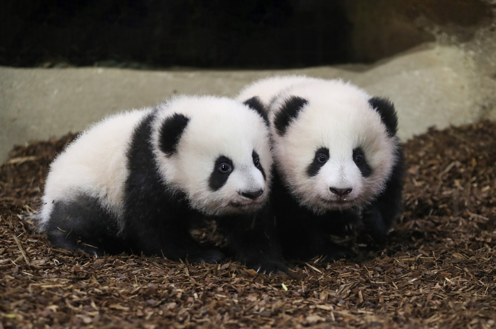

Panda Babies

Source: Zooparc de Beauval via AP
Panda cubs are incredibly small and fragile at birth. They are one of the smallest newborn mammals relative to their mothers, weighing only about 3.5 to 5 ounces (100 to 150 grams), according to the Chengdu Research Base of Giant Panda Breeding. The cubs are born pink, hairless, and blind, and they rely solely on their mother for nourishment and protection during their early stages of life. As they grow, their distinctive black and white fur gradually develops.